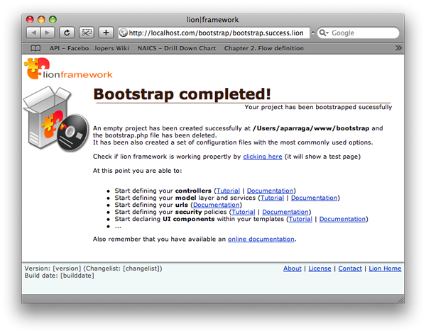
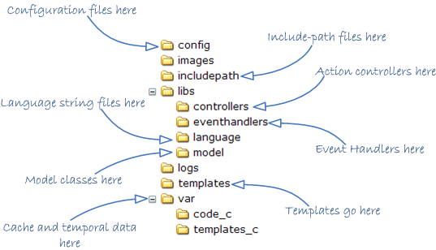

<table cellpadding="10" cellspacing="0" width="100%" border="0"><tr><td valign="top">
<div><a name=""></a><h1>Bootstrap a new project</h1>
  <div class="ref-purpose">Creating new lion based projects from the scratch</div>
 <div class="ref-synopsis"><center><div class="messagebox note metadata plainlinks"><table style="width:100%; background:none"><tr><td width="60"></td><td><strong>IMPORTANT:</strong> The bootstrapping capability has been deprecated. Now lion is distributed with an empty project all together.</td></tr></table></div></center></div>
<h2>Table of Contents</h2>
<ul>

<a href="../Lion/tutorial_Lion.Bootstrap.pkg.html#how_to_bootstrap">Bootstrapping a new project</a><br />

<a href="../Lion/tutorial_Lion.Bootstrap.pkg.html#bootstrapped_application_structure">Directory structure on a bootstrapped project</a><br />
</ul>

 <p></p>
 <span><a name="how_to_bootstrap"></a><h2>Bootstrapping a new project</h2><p>Lion has a bootstrap capability that allows the automagic creation of empty projects from the scratch.<br />
  To use that, just follow the next steps:</p>
  <ol><li>Create a directory where you want to bootstrap your new project. Ensure that the directory has write permissions in order to be able to bootstrap there.</li>
    <li>Create a php file inside that directory called <strong>bootstrap.php</strong> with the following content (ah! fix the &quot;path_to_your_lion_framework&quot;):
      <div class="listing"><pre><ol><li><div class="src-line"><span class="src-php">&lt;?php</span></div></li>
<li><div class="src-line">&nbsp;</div></li>
<li><div class="src-line"><span class="src-inc">include&nbsp;</span><span class="src-str">&quot;path_to_your_lion_framework/lion.php&quot;</span><span class="src-sym">;</span></div></li>
</ol></pre></div></li>
    <li>Execute the <strong>bootstrap.php</strong> from your browser!</li></ol>
  <p>Once we have followed those steps, we should view an screen like the following one:</p>
  <p></p>
  <p>Sorry, no more steps :)<br />
 This screen means that your project has been created successfully. Congratullations!</p>
 <center><div class="messagebox note metadata plainlinks"><table style="width:100%; background:none"><tr><td width="60"></td><td>If you have troubles bootstrapping your new project, please take a look at <a href="../Lion/tutorial_Lion.CommonTroubles.pkg.html">Troubleshooting</a></td></tr></table></div></center></span>
 <span><a name="bootstrapped_application_structure"></a><h2>Directory structure on a bootstrapped project</h2><p>Now let see what Lion has created exactly when bootstrapping the project.</p>
  <p>If we go to the directory where we placed and executed the bootstrap.php, we'll see now a directory structure similar to the following one:</p>
  <p></p>
  <p>Now let see one by one:</p>
  <p><ul><li><strong>includepath</strong>: This directory contains all the xml files used to define the location of each class file. By default, it contains the includepath.xml file, but Lion will read all the files contained in this directory.</li>
    <li><strong>config</strong>: This directory contains all the xml files used to configure the application.</li>
    <li><strong>libs/controllers</strong>: This directory is usefull to place action controllers.</li>
    <li><strong>libs/language</strong>: This directory is used to define language string files. By default you can create a directory for each language that your application will support. i.e. /libs/language/en (english strings), /libs/language/es (spanish strings)...</li>
    <li><strong>libs/model</strong>: This directory is usefull to place the model classes.</li>
    <li><strong>templates</strong>: This directory is usefull to place the application templates.</li>
    <li><strong>var</strong>: This directory is used to store temporal data such as cache files or compiled templates.</li></ul></p>
  <p>However Lion is enough flexible to allow and support your own directory structure. The only restriction is the includepath directory, being the only one that can not be renamed nor moved.</p></span></div>
      </td></tr></table>